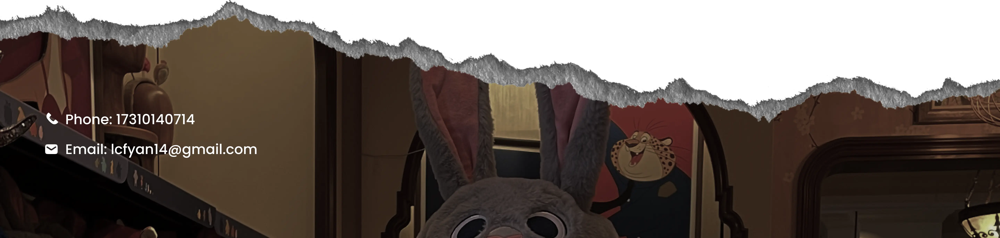

Introduction
Gravicam is a
two-player interactive installation
that popularizes the imaging principles of "
gravitational lensing
" through artistic and gamified cross-media forms. The X126 celestial body player alters their angle relative to the "lens object" and adjusts its mass to send light signals. The observer player can then
capture artistic transformations of the X126 player's face
as influenced by the gravitational lensing effect.
Interactive Installation
Interactive Experience
Face Capture
Game UI
